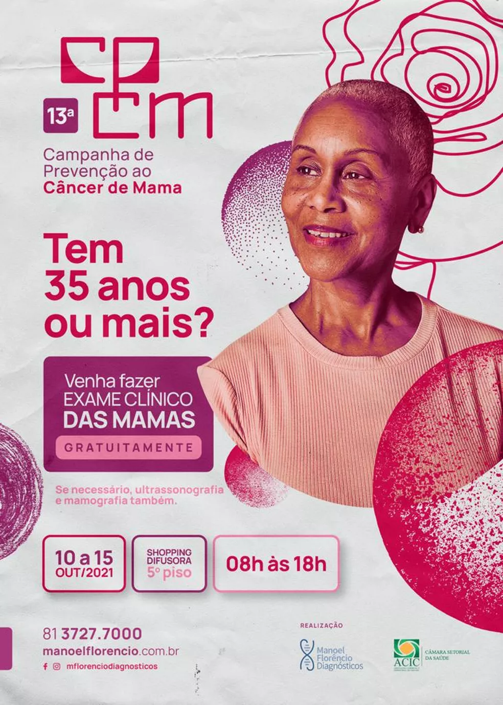
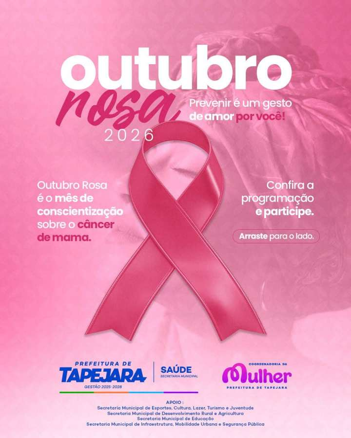

O Outubro Rosa é um movimento de conscientização que busca ampliar o conhecimento sobre o câncer de mama, seus sinais, prevenção e importância da detecção precoce.
Leia maisO câncer de mama acontece quando células da mama passam a se multiplicar de maneira desordenada, podendo formar um tumor.
Existem diferentes tipos de câncer de mama e eles podem apresentar comportamentos diferentes. Por isso, a avaliação por profissionais de saúde é importante diante de alterações suspeitas.
A detecção precoce pode aumentar as possibilidades de tratamento e contribuir para melhores resultados.
Quatro em cada cinco casos ocorrem após os 50 anos. Além disso, entre outros fatores estão: sedentarismo obesidade e sobrepeso, tabagismo, consumo de bebida alcoólica, histórico de câncer de ovário ou mama na família, entre outros.
Alguns sinais podem indicar a necessidade de procurar avaliação médica, como:

Alguns hábitos podem contribuir para reduzir o risco de câncer de mama.
Conhecer o próprio corpo e observar mudanças diferentes do habitual são atitudes importantes.
Ao perceber alguma alteração suspeita, procure um profissional de saúde para avaliação.
O Outubro Rosa ajuda a levar informação para a população e incentiva o cuidado com a saúde das mamas.
A campanha também chama atenção para a importância de reconhecer sinais e sintomas suspeitos e buscar atendimento quando necessário.
Informação, prevenção e acesso aos serviços de saúde são partes importantes do cuidado.